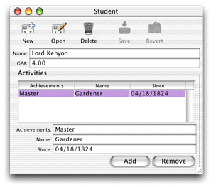
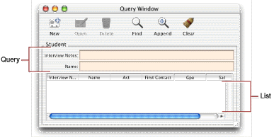

The Properties pane lets you see how the EOGeneration layer interpreted the entities and their attributes in your EOModel.
The Task pop-up menu identifies the properties that are displayed for each entity. That is, you can choose which properties (attributes) are displayed in forms, modal dialogs, query windows, and data lists. The different tasks correspond to different window types:
Figure 3-27 shows a form window.
Figure 3-27 Form window
Figure 3-28 shows a query window.
Figure 3-28 Query window and list task
This menu allows you to change task behavior depending on the window type. By default, all changes to tasks affect both windows and modal dialogs. But if you want different behavior or a different look in one of the window types, select it in the Question menu before making changes to the task and property keys.
The property keys displayed in Assistant are all the attributes of an entity that are client-side class properties.
You can add property keys for methods in your business logic classes using this field.